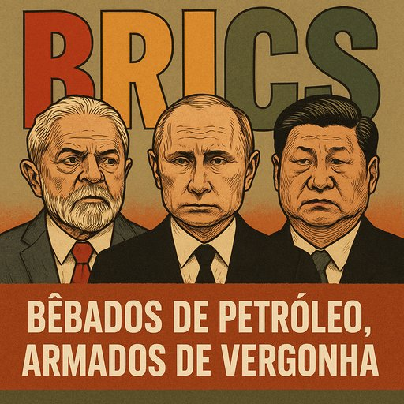

Publicado em 2025-07-06 20:09:56
Na orla dourada do Rio de Janeiro, entre palmeiras, sushi diplomático e discursos com ar de “nova ordem mundial”, juntou-se a grande trupe dos BRICS — esse curioso circo político onde palhaços são generais, ilusionistas são banqueiros, e os mágicos fazem desaparecer... os direitos humanos.
A cimeira? Um desfile de máscaras e ambições.
O propósito? Fingir que há alternativa ao Ocidente enquanto se imita o pior dele, com menos verniz e mais porrete.
Lula da Silva, sempre com jeito para a retórica e a lágrima conveniente, declarou o “colapso do multilateralismo”. E tem razão, sim senhor. Mas esqueceu-se de mencionar que o que se segue é o “multilateralismo dos déspotas” — aquele onde o direito internacional é uma piada, a democracia é opcional, e os opositores políticos são um detalhe que se resolve com gás lacrimogéneo ou prisões secretas.
Vladimir Putin, intervindo em teleconferência — para não ser preso ao sair do avião, entenda-se — anunciou com firmeza que a globalização morreu e que o futuro pertence “aos mercados emergentes”.
Traduzindo:
“A nova ordem mundial será liderada por quem souber invadir vizinhos, envenenar jornalistas, aprisionar artistas, mentir com convicção e banhar-se no sangue do próprio povo.”
O “pai da paz russa” continua, impávido, a recitar tiradas filosóficas enquanto drones bombardeiam hospitais na Ucrânia. E o auditório... aplaude.
O imperador digital da China, o venerável Xi Jinping, nem sequer apareceu. Mandou um emissário — talvez o clone número 3 — para repetir o mantra da “cooperação sem interferências”.
Mas não se iludam: por “não interferir”, a China quer dizer “não se metam quando eu censuro um bilião de almas, derrubo apps, controlo o útero das mulheres uigures ou vigio cada passo com reconhecimento facial”.
A Arábia Saudita junta-se à festa. Um país onde a democracia é tão bem-vinda como uma tempestade de areia no Ramadão.
O Irão, sempre pronto a enforcar homossexuais enquanto fala em valores islâmicos.
O Egipto? Uma ditadura de farda e pirâmides, onde jornalistas somem mais depressa que turistas.
Todos unidos sob a bandeira da... justiça internacional.
Não se riam. Eles dizem isso com cara séria.
O problema?
São como sócios de uma taberna: têm sede, mas nenhum quer pagar a conta.
Cada um com o seu ego, o seu delírio e o seu manual de censura.
Juntos, são um cocktail de petróleo, gás e despotismo.
O Ocidente está decadente, sim. Mas o Oriente autoritário não é alternativa: é retrocesso disfarçado de futuro.
Estamos entre os restos de um mundo baseado em regras que já não funcionam…
… e a alvorada de um mundo baseado em força bruta, censura e cinismo institucionalizado.
Chamam-lhe multipolaridade, mas é uma casa de alterne geopolítica onde o que conta não é quem tem razão, mas quem tem armas, reservas de petróleo e um exército de bots nas redes sociais.
O povo?
Esse continua a morrer na Ucrânia, a ser silenciado em Pequim, a ser torturado em Teerão, a ser esquecido em Maputo e a ser entretido com futebol no Brasil.
Mas quem sabe… talvez um dia despertemos.
Quando o último jornalista for preso e o último voto for digitalmente apagado, alguém se lembrará que democracia é coisa frágil.
E que um mundo dominado pelos BRICS não é o futuro.
É o eco sombrio de todos os passados que já devíamos ter superado.
Artigo da autoria de Augustus Veritas Lumen in Fragmentos de Caos
"Chamam-lhe nova ordem, mas é só o velho caos com gravata nova.
Putin vende tanques como se fossem votos, Xi censura o mundo em silêncio, e Lula distribui discursos enquanto o povo ainda espera pão.
Os BRICS? Um clube de autocratas e democracias coxas, bêbados de petróleo, armados de vergonha — e convencidos de que são a esperança do planeta."